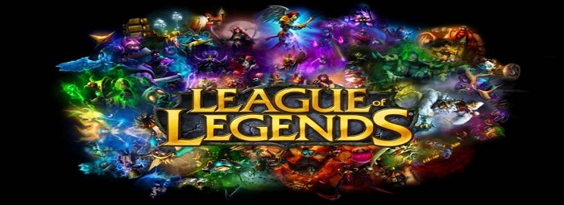
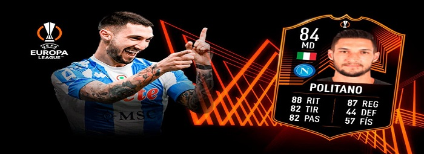

League of Legends
Worlds LoL 2021: Calendario, grupos y equipos del Mundial de League of Legends

Formato del 'play-in' de los Worlds de 2021 El 'play-in' tendrá lugar desde el martes 5 de octubre hasta el sábado 9 de octubre.
Los equipos de cada grupo se enfrentan los unos a los otros en un 'BO1'.
Los dos primeros clasificados de cada grupo pasan de forma directa al 'main-stage'.
El tercer y cuarto clasificado de cada grupo se enfrentan en un 'BO5'.
El ganador del 'BO5' entre tercer y cuarto clasificado se enfrenta al segundo clasificado del grupo contrario en otro 'BO5'. Los ganadores pasan al 'main-stage'.
En total pasan 4 equipos del 'play-in' al 'main-stage'.
FIFA 22
¿Merece la pena Matteo Politano RTTK? + Solución del SBC

Estamos ante el típico jugador con mucha calidad y poco físico. Eso significa que no es recomendable para todos los estilos de juego, pero que en algunos de ellos puede ser bastante valioso. Sobre todo porque, salvo el ridículo 42 de fuerza, no tiene ningún otro defecto grosero.
Sí que es un extremo bastante explosivo en la arrancada, esa es una de sus principales fortalezas. Aunque no llega a cinco estrellas de filigranas, con las que cuatro que posee puede hacer mucho daño por sus buenos números de agilidad (92), balance (90) y dribling (88). Tiene una conducción de balón muy fina gracias a esos atributos y su eléctrico regate puede ser clave si recibe la pelota dentro del área (de hecho, Matteo puede ser más importante por dentro que pegado a la banda).
Valorant
El sorprendente uso del muro de Sage descubierto por la comunidad

Uno de los últimos episodios de este dispendio de creatividad lo ha protagonizado un jugador que no ha dudado en compartir con el mundo uno de los usos más divertidos y creativos del muro de Sage. Esta habilidad, normalmente utilizada para bloquear la visión o alcanzar puntos del mapa inaccesibles de cualquier otro modo, también puede cambiar la ubicación de los objetivos, y eso es exactamente lo que hizo teniendo en cuenta lo predecible que es el plantado de bomba en el mapa de Icebox.